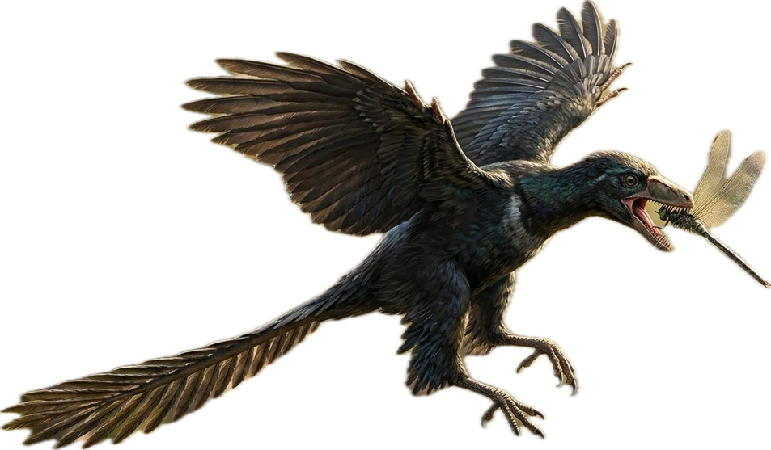
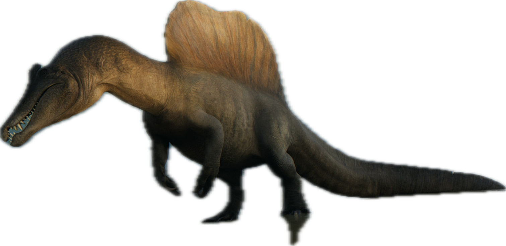

Acrocanthosaurus


Alamosaurus


Albertosaurus

Allosaurus

Amargasaurus

Ammonite


Ankylodocus


Ankylosaurus

Apatosaurus

Archaeornithomimus

Archelon

Archeopteryx

Atrociraptor

Attenborosaurus

Australovenator

Bajadasaurus

Barbaridactylus

Baryonyx

Becklespinax

Brachiosaurus

Camarasaurus

Carcharodontosaurus

Carnotaurus

Cearadactylus

Ceratosaurus

Chasmosaurus

Coelophysis

Compsognathus

Concavenator

Corythosaurus

Cryolophosaurus

Deinocheirus

Deinonychus

Deinosuchus

Dilophosaurus

Dimetrodon

Dimorphodon

Diplocaulus

Diplodocus

Distortus Rex

Dracorex

Dracoventator

Dreadnoughtus

Dryosaurus

Dsungaripterus

Dunkleosteus

Edestus

Edmontosaurus

Elasmosaurus

Gallimimus

Geosternbergia

Giganotosaurus

Gigantoraptor


Gigantspinosaurus

Gorgonops

Gorgosaurus

Hatzegopteryx

Helicoprion

Herrerasaurus

Homalocephale

Huayangasaurus

Ichthyosaurus

Igaunodon

Indominus Rex

Indoraptor

Irritator

Jeholopterus

Kentrosaurus

Kronosaurus

Liopleurodon

Lokiceratops

Lystrosaurus

Maaradactylus

Maiasaura

Majungasaurus

Mamenchisaurus

Megalodon

Megalosaurus

Megaraptor

Metriacanthosaurus

Microceratus

Minmi

Monkeydactyl


Monolophosaurus

Moros Intrepedis

Mosasaurus

Mutadon

Muttaburrasaurus

Nanotyrannus

Nasutoceratops

Nigersaurus

Nodosaurus

Nothosaurus

Olorotitan

Onchopristis

Ouranosaurus

Oviraptor

Oxalaia

Pachycephalosaurus

Pachyrhinosaurus

Parasaurolophus

Pentaceratops

Plesiosaurus

Polacanthus

Postosuchus

Proceratosaurus

Pterandon

Pyroraptor

Qianzhousaurus

Quetzalcoatlus

Rajasaurus

Sauropelta

Scorpious Rex

Segisaurus

Shonisaurus

Sinoceratops

Sinosauropteryx

Spinoceratops


Spinoraptor

Spinosaurus

Stegoceratops

Stegosaurus

Struthiomimus

Stygimolich

Styracosaurus

Styxosaurus

Suchomimus

Supersaurus

Tapejara

Tarbosaurus

Thalassodromeus

Thanatosdrakon

Therizinosaurus

Torosaurus

Torvosaurus

Triceratops

Troodon

Tropeognathus

Tsintaosaurus

Tylosaurus

Tyrannosaurus Rex

Tyrannotitan

Utahraptor

Velociraptor

Wuerhosaurus

Xiphactinus

Yutyrannus